PLL Design and Verilog-A Behavioral Modeling Lab Report
1. PFD Verilog-A Model
// AMS PLL Project: Phase Frequency Detector (PFD)
`include "constants.vams"
`include "disciplines.vams"
// REF: Reference signal
// FB: Feedback signal
// UP: Up signal (FB late)
// DN: Down signal (FB early)
module PFD(REF,FB,UP,DN);
// VDD and threshold voltage for digital signals
parameter real VDD = 1.2;
parameter real thresh = 0.6;
// rise/fall/delay times of PFD output
parameter real trise = 10p, tfall = 10p, td = 0;
input REF,FB;
output UP,DN;
electrical REF,FB,UP,DN;
// Internal UP and DN signals
real DN_i, UP_i;
analog begin
// Check DN_i state when REF arrives
@(cross(V(REF)-thresh,1))
if(DN_i < thresh) begin
// *** add line here ***
UP_i = VDD;
DN_i = 0;
end
else begin
UP_i = 0;
DN_i = 0;
end
// Check UP_i state when FB arrives
@(cross(V(FB)-thresh,1))
if(UP_i < thresh) begin
DN_i = VDD;
end
else begin
UP_i = 0;
DN_i = 0;
end
V(UP) <+ transition(UP_i,td,trise,tfall);
V(DN) <+ transition(DN_i,td,trise,tfall);
end
endmodule
2. PFD Testbench Results
Leading FB
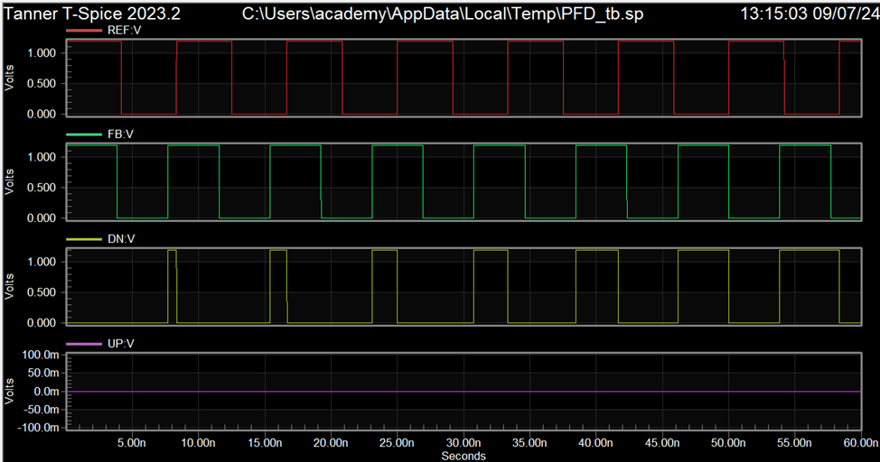
Same Frequency (Fref = Ffb)
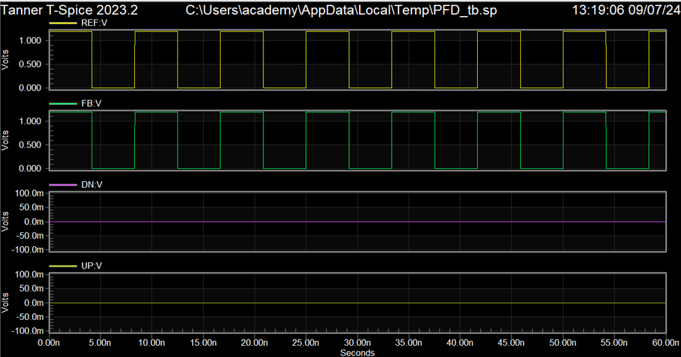
Lagging FB
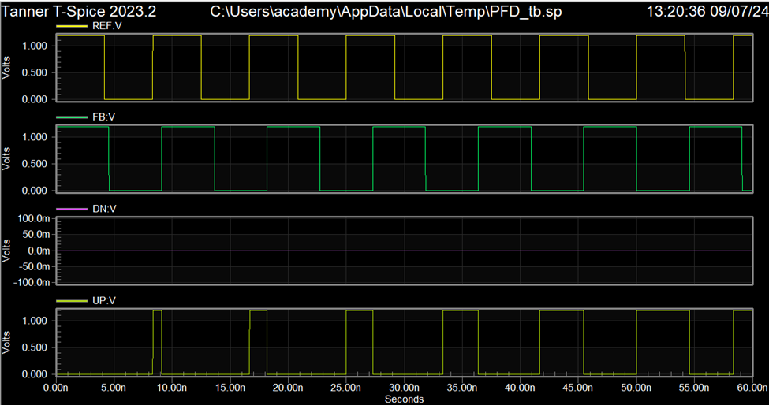
Figure: PFD operation (similar to Fig. 6.13 and Fig. 6.14 in the reference)
3. CHP Verilog-A Model
// AMS PLL Project: Charge Pump (CHP)
`include "constants.vams"
`include "disciplines.vams"
// UP: Up signal
// DN: Dn signal
// IOUT: CHP current output
// Since the output is current, IOUT cannot be left unconnected (o.c.) in the testbench
module CHP(UP,DN,IOUT);
input UP,DN;
inout IOUT;
electrical UP,DN,IOUT;
// ichp: CHP current
parameter real ichp = 10u from [0:inf);
// Threshold voltage for digital signals
parameter real thresh=0.6;
// rise/fall/delay times of CHP output
parameter real trise=10p, tfall=10p, td=0;
// Internal variable for CHP output current
real IOUT_i = 0;
analog begin
// Generate events at UP and DN transitions
@(cross(V(UP) - thresh, 0));
@(cross(V(DN) - thresh, 0));
if ((V(UP) > thresh) && (V(DN) < thresh))
IOUT_i = -ichp;
else if ((V(DN) > thresh) && (V(UP) < thresh))
IOUT_i = ichp;
else
IOUT_i = 0;
I(IOUT) <+ transition(IOUT_i,td,trise,tfall);
end
endmodule
4. CHP Testbench Results
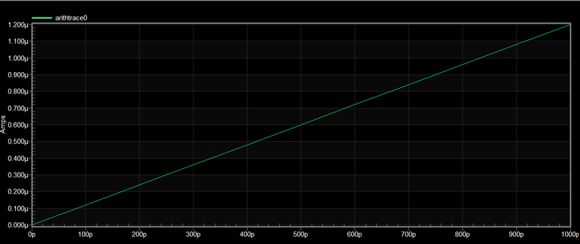
Figure : CHP operation (similar to Fig. 6.18 in the reference)
Note: We swept for only 1n delay as it make sense that the delay won't be more than that
5. VCO Verilog-A Model
// AMS PLL Project: Voltage Controlled Oscillator (VCO)
`include "constants.vams"
`include "disciplines.vams"
module VCO(VCTRL,VOUT);
parameter real VHIGH = 1.2;
parameter real Vmin=0.2;
parameter real Vmax=1 from (Vmin:inf);
parameter real Fmin=0.5G from (0:inf);
parameter real Fmax=1.5G from (Fmin:inf);
parameter real trise=10p, tfall=10p, td=0;
input VCTRL;
output VOUT;
voltage VCTRL,VOUT;
real freq;
real phase;
real sine;
real VOUT_i;
analog begin
// compute the freq from the input voltage
freq =((V(VCTRL) - Vmin)*(Fmax - Fmin) / (Vmax - Vmin)) + Fmin;
// bound the frequency
if (freq < Fmin) freq = Fmin;
if (freq > Fmax) freq = Fmax;
phase = 2 * `M_PI * idtmod(freq,0,1,-0.5);
// generate the output
sine = sin(phase);
@(cross(sine,0))
;
if (sine > 0)
VOUT_i = VHIGH;
else
VOUT_i = 0;
V(VOUT) <+ transition(VOUT_i,td,trise,tfall);
// bound the time step
$bound_step(1 / (freq * 100));
end
endmodule
6. VCO Testbench Results
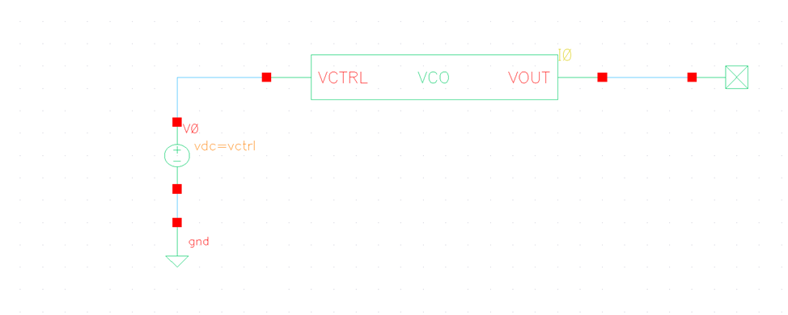

Figure : VCO operation (similar to Fig. 6.11 in the reference)
7. Divider Verilog-A Model
// AMS PLL Project: Frequency Divider
`include "constants.vams"
`include "disciplines.vams"
module Divider(VIN,VOUT);
output VOUT; voltage VOUT; // output
input VIN; voltage VIN; // input (edge triggered)
parameter real vh=1.2; // output voltage in high state
parameter real vl=0; // output voltage in low state
parameter real vth=0.6; // threshold voltage at input
parameter integer ratio=8 from [2:inf); // divider ratio
parameter real tt=10p from (0:inf); // transition time of output signal
parameter real td=0 from [0:inf); // average delay from input to output
// *** add line here ***
real count=0;
real out_value=0;
analog begin
@(cross(V(VIN) - vth, 1)) begin
if (count==floor(ratio/2))
out_value = vh;
if (count == floor(ratio))begin
out_value = vl;
count = 0;
end
count = (count + 1);
end
V(VOUT) <+ transition(out_value, td, tt);
end
endmodule
8. Divider Testbench Results (Verilog-A)
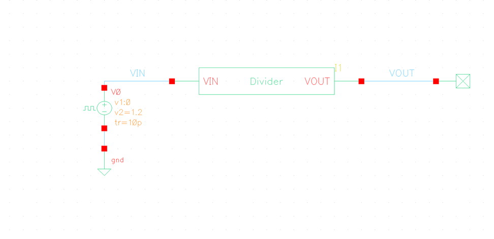
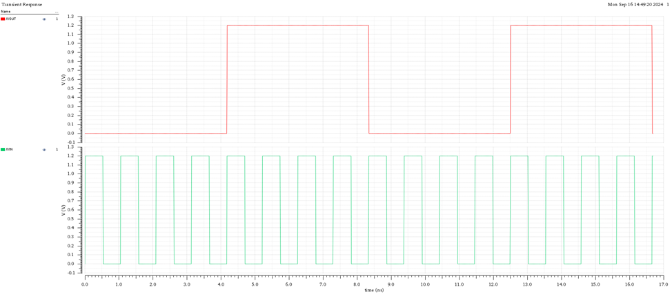
Figure : Divider operation using Verilog-A model (similar to Fig. 6.20 in the reference)
9. Transistor-Level Divider Design
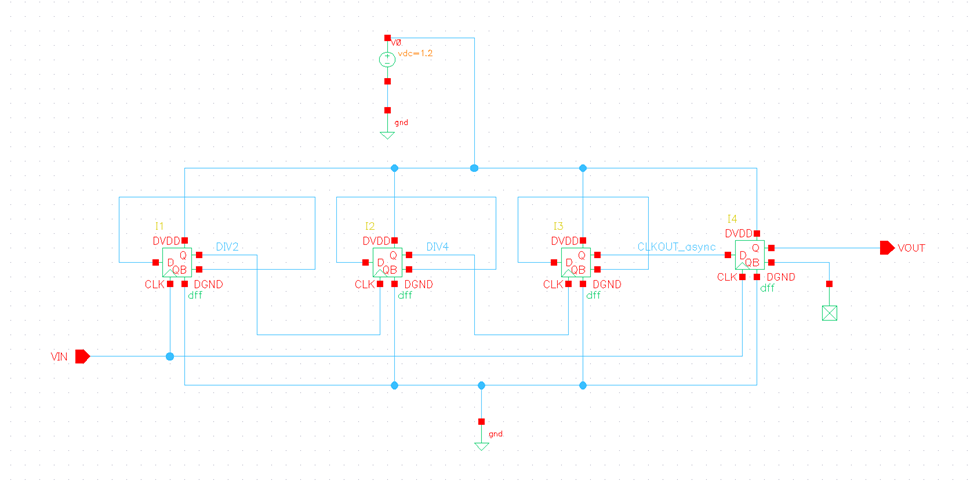
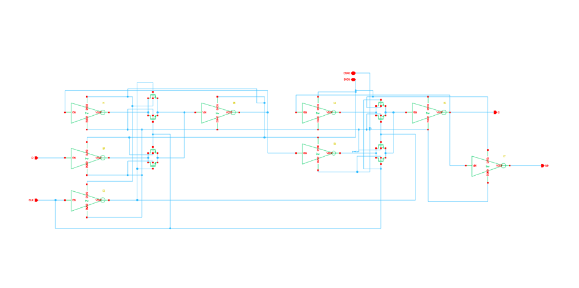
Figure : Transistor-level schematic of the DFF used in the divider design
10. Transistor-Level Divider Testbench Results
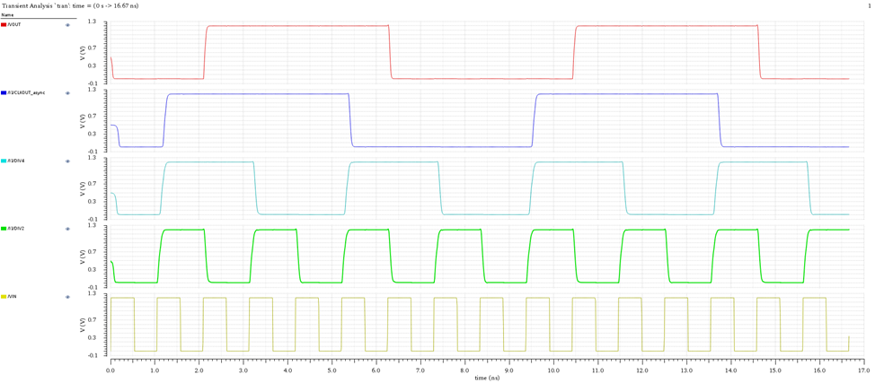
Figure : Divider operation using transistor-level design (similar to Fig. 6.20 in the reference)
11. Complete PLL Simulation (Verilog-A Models) (VCTRL)
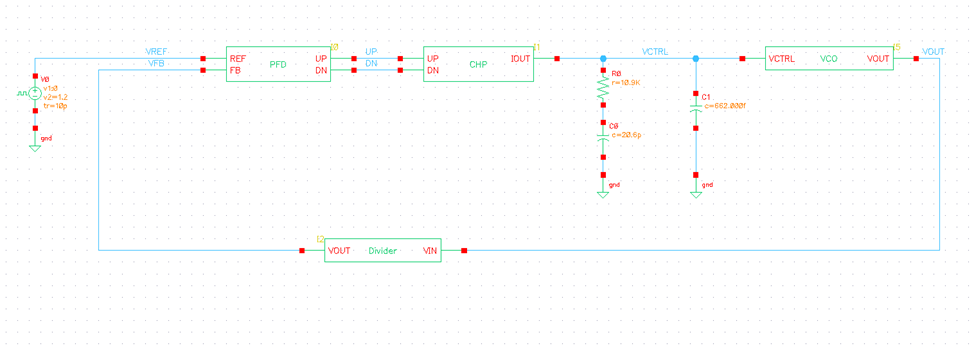
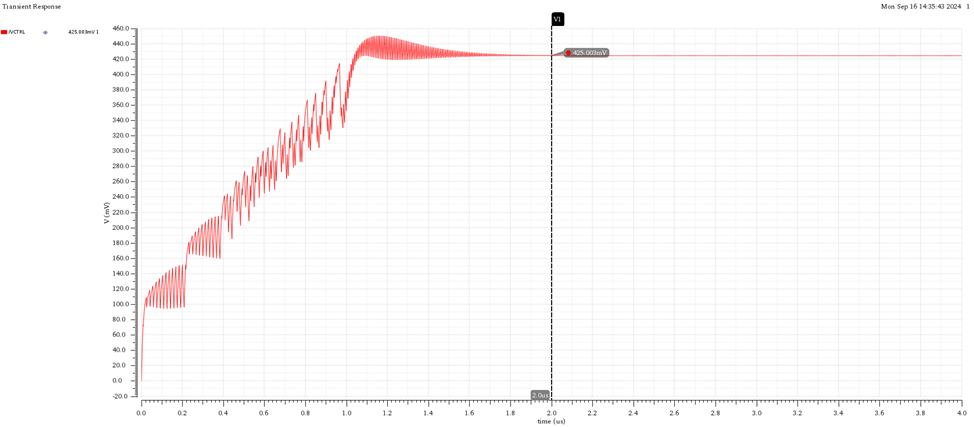
Figure : VCO control voltage (similar to Fig. 6.7 in the reference)
Vctrl @ lock = 0.425mV
12. Analytical Calculation of Control Voltage at Lock
The equation for is:
The equation for is:
Given that:
13. Comparison of Simulated vs. Calculated Control Voltage
| Simulated Value | Calculated Value | |
|---|---|---|
| VCTRL | 0.4244 | 0.425 |
Comment: The two results match each other.
14. Complete PLL Operation (Verilog-A Models) (ALL SIGNALS)
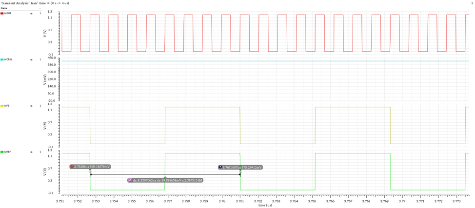
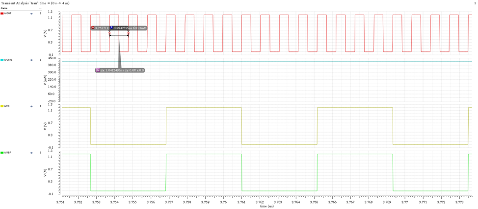
Figure : PLL operation (similar to Fig. 6.8 in the reference)
Period of Ref: 8.33n
Period of VOUT: 1.0412n
15. Simulation Log (Verilog-A Models)
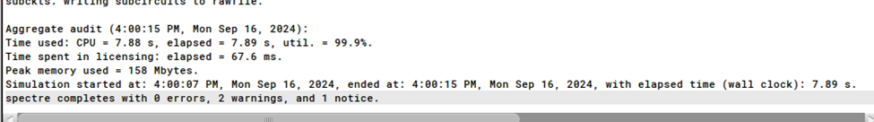
16. Updated Hierarchy with Schematic Divider
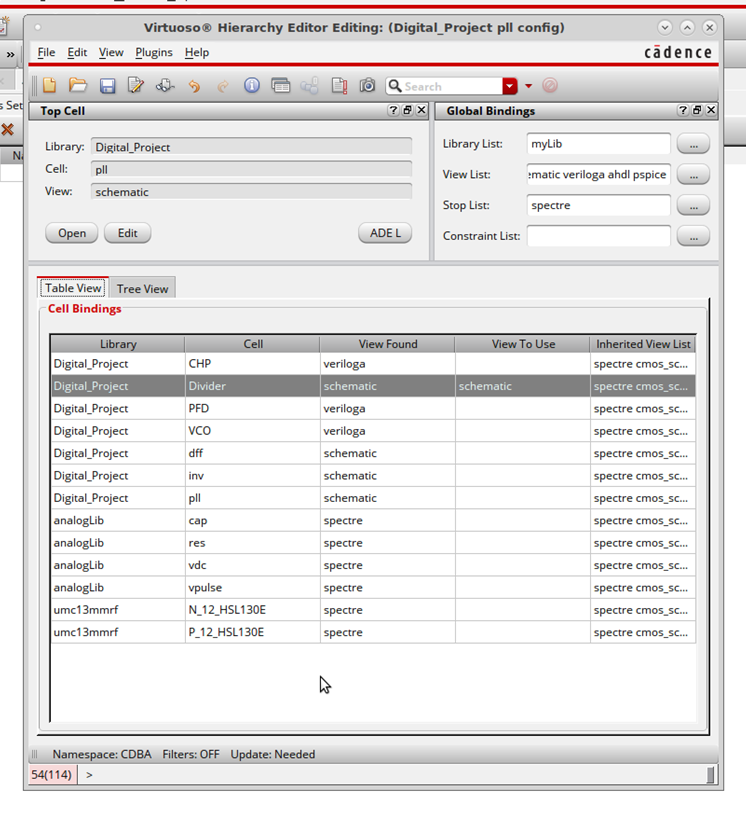
Figure : Configuration in hierarchy editor with schematic view of divider
17. PLL Simulation with Transistor Level (Control Voltage)
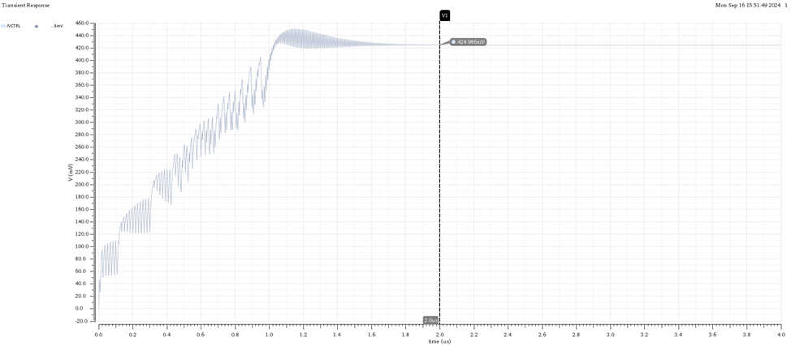
Figure : VCO control voltage with schematic divider (similar to Fig. 6.23 in the reference)
Note: Different to the one in pll document due to initial condition, we could achieve the same if we put IC on capacitor.
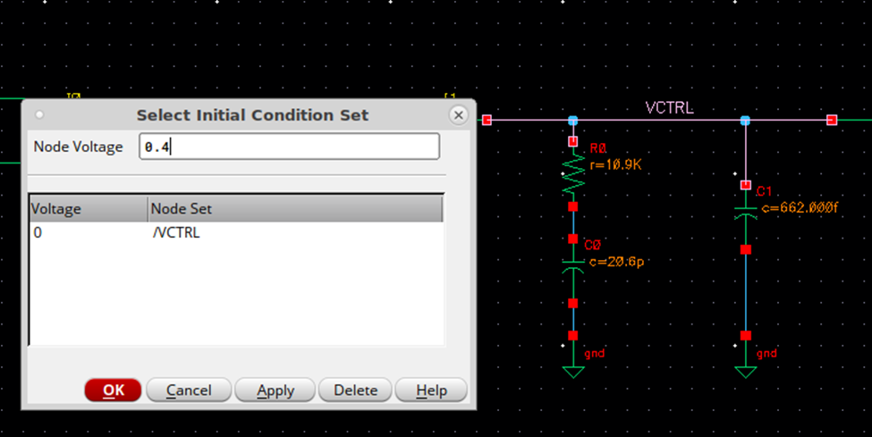
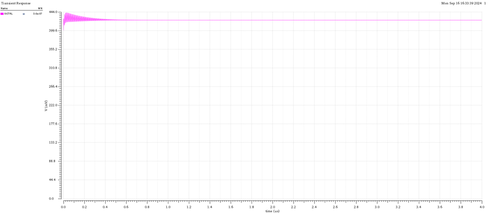
18. PLL Operation with Transistor Level Divider (ALL SIGNALS)
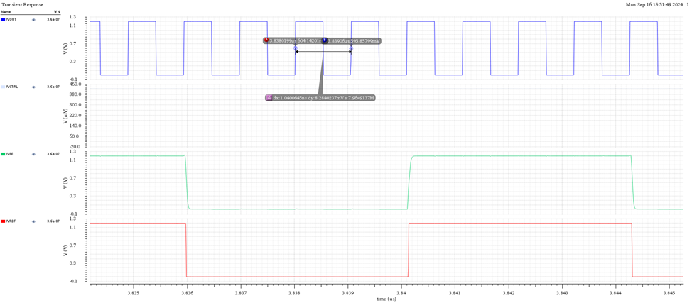
Figure 11: PLL operation with schematic divider (similar to Fig. 6.24 in the reference)
Period of Ref: 8.33n
Period of VOUT: 1.04n
19. Simulation Log (with Schematic Divider)
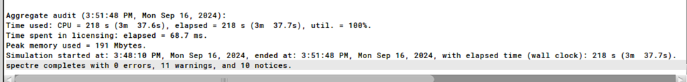
20. Simulation Time Comparison
| Behavioral | Transistor Level | |
|---|---|---|
| Simulation Time | 7.9 Seconds | 3 Minutes and 38 Seconds |
Comment: There is a huge difference between the Transistor level simulation and Behavior level simulation results, we can see the advantage of simulating complex systems using top-down methodology with behavioral models to decrease simulation time and verify that the system will work before implementing and wasting time on something that will not work and not achievable.